Senior Researcher
Tencent Game AI Research Center
Los Angeles, US
tflsguoyu(at)gmail(dot)com
B.A
→
M.A
→
M.Phil
→
R.A
→
Ph.D
(
Intern
→
Intern
→
Intern
→
 Intern)
→
Researcher
Intern)
→
Researcher
I am a senior researcher at Tencent Games AI Research Center based in Los Angeles, US. I received my Ph.D in Computer Science from University of California, Irvine in 2021, supervised by ZHAO Shuang.
My interests include Computer Graphics and Vision, especially in material appearance modeling and physically based rendering.
Before starting Ph.D, I was a member of BeingThere Centre and worked on several research projects at Nanyang Technological University (Singapore) as a Research Associate.
I obtained my M.S in CS from Shenzhen Institute of Advanced Technology, Chinese Academy Sciences (Shenzhen, China), advised by HENG Pheng-Ann.
And B.S in Mathematics from Central South University (Changsha, China).
Publications:
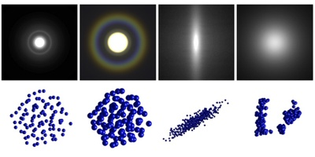
Beyond Mie Theory: Systematic Computation of Bulk Scattering Parameters based on Microphysical Wave Optics
Yu Guo, Adrian Jarabo, Shuang Zhao
ACM Transactions on Graphics (SIGGRAPH Asia 2021), 2021
[abstract]
[paper]
[code]
Light scattering in participating media and translucent materials is typically modeled using the radiative transfer theory. Under the assumption of independent scattering between particles, it utilizes several bulk scattering parameters to statistically characterize light-matter interactions at the macroscale. To calculate these parameters based on microscale material properties, the Lorenz-Mie theory has been considered the gold standard. In this paper, we present a generalized framework capable of systematically and rigorously computing bulk scattering parameters beyond the far-field assumption of Lorenz-Mie theory. Our technique accounts for microscale wave-optics effects such as diffraction and interference as well as interactions between nearby particles. Our framework is general, can be plugged in any renderer supporting Lorenz-Mie scattering, and allows arbitrary packing rates and particles correlation; we demonstrate this generality by computing bulk scattering parameters for a wide range of materials, including anisotropic and correlated media.
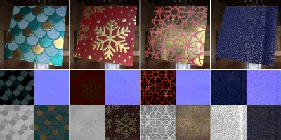
MaterialGAN: Reflectance Capture using a Generative SVBRDF Model
Yu Guo, Cameron Smith, Miloš Hašan, Kalyan Sunkavalli, Shuang Zhao
ACM Transactions on Graphics (SIGGRAPH Asia 2020), 2020
[abstract]
[paper]
[suppl]
[fastforward]
[presentation]
[slides]
[code]
We address the problem of reconstructing spatially-varying BRDFs from a small set of image measurements. This is a fundamentally under-constrained problem, and previous work has relied on using various regularization priors or on capturing many images to produce plausible results. In this work, we present MaterialGAN, a deep generative convolutional network based on StyleGAN2, trained to synthesize realistic SVBRDF parameter maps. We show that MaterialGAN can be used as a powerful material prior in an inverse rendering framework: we optimize in its latent representation to generate material maps that match the appearance of the captured images when rendered. We demonstrate this framework on the task of reconstructing SVBRDFs from images captured under flash illumination using a hand-held mobile phone. Our method succeeds in producing plausible material maps that accurately reproduce the target images, and outperforms previous state-of-the-art material capture methods in evaluations on both synthetic and real data. Furthermore, our GAN-based latent space allows for high-level semantic material editing operations such as generating material variations and material morphing.
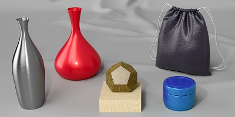
A Bayesian Inference Framework for Procedural Material Parameter Estimation
Yu Guo, Miloš Hašan, Lingqi Yan, Shuang Zhao
Computer Graphics Forum (Pacific Graphics 2020), 2020
[abstract]
[poster]
[paper]
[suppl]
[fastforward]
[slides]
Procedural material models have been gaining traction in many applications thanks to their flexibility, compactness, and easy editability. In this paper, we explore the inverse rendering problem of procedural material parameter estimation from photographs using a Bayesian framework. We use summary functions for comparing unregistered images of a material under known lighting, and we explore both hand-designed and neural summary functions. In addition to estimating the parameters by optimization, we introduce a Bayesian inference approach using Hamiltonian Monte Carlo to sample the space of plausible material parameters, providing additional insight into the structure of the solution space. To demonstrate the effectiveness of our techniques, we fit procedural models of a range of materials---wall plaster, leather, wood, anisotropic brushed metals and metallic paints---to both synthetic and real target images.
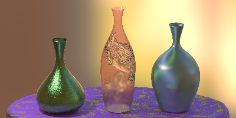
Position-Free Monte Carlo Simulation for Arbitrary Layered BSDFs
Yu Guo, Miloš Hašan, Shuang Zhao
ACM Transactions on Graphics (SIGGRAPH Asia 2018), 2018
[abstract]
[paper]
[suppl]
[code]
[poster]
[fastforward]
[slides]
[Two Minute Papers]
Real-world materials are often layered: metallic paints, biological tissues, and many more. Variation in the interface and volumetric scattering properties of the layers leads to a rich diversity of material appearances from anisotropic highlights to complex textures and relief patterns. However, simulating light-layer interactions is a challenging problem. Past analytical or numerical solutions either introduce several approximations and limitations, or rely on expensive operations on discretized BSDFs, preventing the ability to freely vary the layer properties spatially. We introduce a new unbiased layered BSDF model based on Monte Carlo simulation, whose only assumption is the layer assumption itself. Our novel position-free path formulation is fundamentally more powerful at constructing light transport paths than generic light transport algorithms applied to the special case of flat layers, since it is based on a product of solid angle instead of area measures, so does not contain the high-variance geometry terms needed in the standard formulation. We introduce two techniques for sampling the position-free path integral, a forward path tracer with next-event estimation and a full bidirectional estimator. We show a number of examples, featuring multiple layers with surface and volumetric scattering, surface and phase function anisotropy, and spatial variation in all parameters.
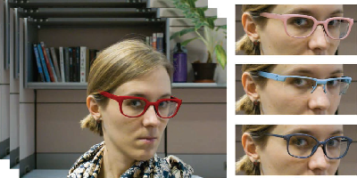
A Virtual Try-on System for Prescription Eyeglasses
Qian Zhang, Yu Guo, Pierre-Yves Laffont, Tobias Martin, Markus Gross
IEEE Computer Graphics and Application, 2017
[abstract]
[paper]
[video]
Corrective lenses introduce distortion caused by the refraction effect, which changes the wearer’s appearance. To give users a more realistic experience, a virtual try-on system modifies an input video and virtually inserts prescription eyeglasses with reflections and shading, producing an output similar to a virtual mirror.
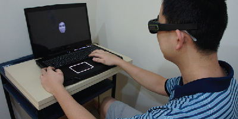
3D Faces are Recognized More Accurately and Faster than 2D Faces, but with Similar Inversion Effects
Derric Eng, Belle Yick, Yu Guo, Hong Xu, Miriam Reiner, TJ Cham, SH Chen
Vision Research, 2017
[abstract]
[paper]
[poster]
Recognition of faces typically occurs via holistic processing where individual features are combined to provide an overall facial representation. However, when faces are inverted, there is greater reliance on featural processing where faces are recognized based on their individual features. These findings are based on a substantial number of studies using 2-dimensional (2D) faces and it is unknown whether these results can be extended to 3-dimensional (3D) faces, which have more depth information that is absent in the typical 2D stimuli used in face recognition literature. The current study used the face inversion paradigm as a means to investigate how holistic and featural processing are differentially influenced by 2D and 3D faces. Twenty-five participants completed a delayed face-matching task consisting of upright and inverted faces that were presented as both 2D and 3D stereoscopic images. Recognition accuracy was significantly higher for 3D upright faces compared to 2D upright faces, providing support that the enriched visual information in 3D stereoscopic images facilitates holistic processing that is essential for the recognition of upright faces. Typical face inversion effects were also obtained, regardless of whether the faces were presented in 2D or 3D. Moreover, recognition performances for 2D inverted and 3D inverted faces did not differ. Taken together, these results demonstrated that 3D stereoscopic effects influence face recognition during holistic processing but not during featural processing. Our findings therefore provide a novel perspective that furthers our understanding of face recognition mechanisms, shedding light on how the integration of stereoscopic information in 3D faces influences face recognition processes.
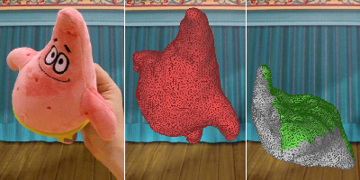
Physically Based Video Editing
Jean-Charles Bazin, Claudia Pluss, Yu Guo, Tobias Martin, Alec Jacobson, Markus Gross
Computer Graphics Forum (Pacific Graphics 2016), 2016
[abstract]
[paper]
[video]
Convincing manipulation of objects in live action videos is a difficult and often tedious task. Skilled video editors achieve this with the help of modern professional tools, but complex motions might still lack physical realism since existing tools do not consider the laws of physics. On the other hand, physically based simulation promises a high degree of realism, but typically creates a virtual 3D scene animation rather than returning an edited version of an input live action video. We propose a framework that combines video editing and physics-based simulation. Our tool assists unskilled users in editing an input image or video while respecting the laws of physics and also leveraging the image content. We first fit a physically based simulation that approximates the object’s motion in the input video. We then allow the user to edit the physical parameters of the object, generating a new physical behavior for it. The core of our work is the formulation of an image-aware constraint within physics simulations. This constraint manifests as external control forces to guide the object in a way that encourages proper texturing at every frame, yet producing physically plausible motions. We demonstrate the generality of our method on a variety of physical interactions: rigid motion, multi-body collisions, clothes and elastic bodies.
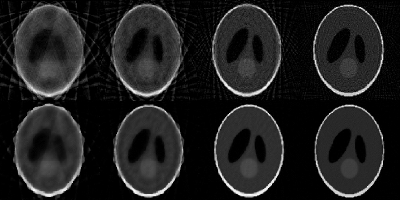
GPU Accelerated CBCT Reconstruction From Few Views with SART and TV Regularization
Ping Liu, Lin Shi, Defeng Wang, Yu Guo, Jianying Li, Jing Qin, Pheng-Ann Heng
HPC-MICCAI, 2013
[abstract]
[paper]
Compressed sensing-based iterative algorithms can reconstruct high-quality CBCT from undersampled and noisy projection data. However, a practical implementation of these methods still remains a challenge due to the heavy computation. We implemented an algorithm by combining simultaneous algebraic reconstruction technique (SART) and total variation (TV) regularization for the CBCT reconstruction from few views. More importantly, we introduced approaches to fit the SART and TV into the GPU architecture. Experimental results showed that our GPU accelerated algorithm could obtain good reconstruction quality from 20 to 40 projections, as well as significant gain in time performance. It only took 29.1s for reconstruction from 120 projections with 40 iterations. The proposed method has potential to make iterative-based CBCT reconstruction more accessable for routine clinical applications.
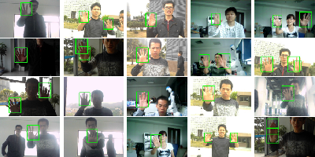
Real-time Hand Detection Based on Multi-stage HOG-SVM Classifier
Jiang Guo, Jun Cheng, Jianxin Pang, Yu Guo
International Conference on Image Processing (ICIP), 2013
[abstract]
[paper]
In this paper, we propose a real-time hand detection method with multi-stage HOG-SVM classifier. Unlike traditional methods based on learning which make decomposition of feature vector or combination of different types of features or classifiers, upon the division of background into several categories, we propose a multi-stage classifier which combines several SVM classifies each of which is trained to distinguish corresponding divisions of background and target. Furthermore, in order to improve speed performance, skin color in-formation and integral histogram are also applied. Experiment results demonstrate that the proposed algorithm works well under multiple challenging backgrounds in real-time speed (16 frames per second).
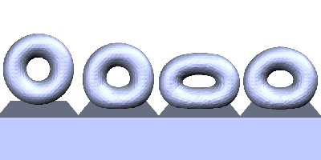
A GPU-accelerated Finite Element Solver for Simulation of Soft-body Deformation
Yu Guo, Jianying Li, Ping Liu, Qiong Wang, Jing Qin
International Conference on Information and Automation (ICIA), 2013
[abstract]
[paper]
A nonlinear physical simulation is presented involving the soft body deformation and interaction contacts. We demonstrate the finite element method relying on Lagrangian discretization to simulate the deformation of the soft body with hyperelastic material properties. To perform a stable simulation, we use the constrained Delaunay Tetrahedralization to resampling and remeshing the object. A new contact strategy is developed and used to replace the collision detection. This method does not need to iteratively achieve the optimal contact response on the constrained boundary. It can dynamically determine whether the contact status of the point should be in a static or a sliding friction mode. The explicit method for the finite element model is employed in order to perform all the steps of the algorithm on the GPUs and achieve a real-time simulation.
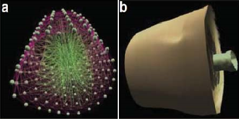
A Survey on Simulation of Soft Tissue Deformation in Virtual Surgery (in Chinese)
Yu Guo, Jing Qin
Journal of Integration Technology, 2013
[abstract]
[paper]
Human soft tissues generally exhibit complex material properties such as nonlinearity, anisotropy, incompressibility and viscoelastictity. Soft tissue deformation is one of the most important yet difficult research tasks in virtual surgery. This paper presents a comprehensive survey on simulation of soft tissue deformation in virtual surgery. We first give an introduction of the virtual surgery system. Then we detailed variours methods from geometrically-based methods to physically-based methods, from mesh-based models to meshless models. Finally, we describe some promissing research directions on this topic.
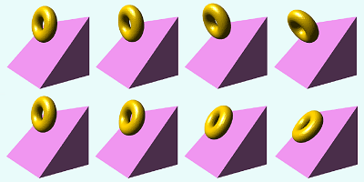
Fall Over or Sliding Down?
Yu Guo.
Siggraph Asia (Poster), 2012
[abstract]
[paper]
[poster]
We present a contact model depending on constraints coupled with frictions which is called portable frictional contact model. Although it does not reach the optimal result, the flexibility and convenience of our method make it an easier use in contact simulation.
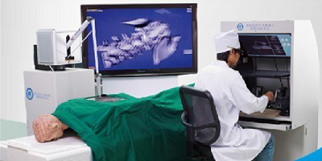
A Master-Slave Robotic Simulator Based on GPUDirect
Jianying Li, Yu Guo, Heye Zhang, Yongming Xie
International Conference on Intelligent Robots and Systems (IROS), 2012
[abstract]
[Paper]
The same as in traditional surgery, surgeons in telerobotic surgery need extensive training to achieve experience and highly accurate instrument manipulation. Traditional training methods like practice in operating room have major drawbacks such as high risk and limited opportunity for which virtual reality (VR) and computer technologies can offer solutions. To accelerate the data transmission speed in our master-slave robotic simulator, GPUDirect was applied to ensure the synchronization and display rate of three computers. By using GPUDirect with InfiniBand card we realized up to 247% performance improvement in data transmission speed on NVIDIA Tesla™ products on different computers compared to that without GPUDirect, which shows that GPUDirect enables better communication between remote GPUs over InfiniBand.
Thesis:
Multi-scale Appearance Modeling of Complex Materials
Ph.D.
August, 2021
[Paper]
[Slides]
GPU-based Soft Body Deformation with Nonlinear Finite Element Method
Master
June, 2013
[Paper (In Chinese)]
[Slides (In Chinese)]
Forces Distribution with Fractal Theory in High Velocity Compaction Technology
Bachelor
June, 2010
[Paper (In Chinese)]
[Slides (In Chinese)]